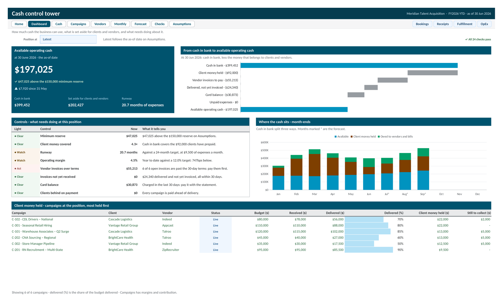

Operational Finance Control Tower
A fourteen tab Excel workbook, with a Google Sheets version, for a business whose clients prepay and whose vendors bill later. It works out how much of the bank balance is really free to use at any month end, after client money held, vendor invoices, spend not yet invoiced, and the card balance. Eight controls, a three month forecast, and 24 built in checks sit on top.

This build models a recruitment advertising agency. Clients prepay campaign budgets, the agency keeps a contracted margin, and the rest passes through to job board vendors such as Indeed and ZipRecruiter, who invoice weeks later or get charged to the company card. So the bank balance always looks better than the cash the business can use. Four inputs go in, one row per booking, client payment, vendor line, and expense, and every status, paid, on card, invoiced, or not yet invoiced, is worked out from the dates against the as of date.
The Dashboard leads with available operating cash: cash in bank less the client money held for work not yet delivered, vendor invoices to pay, spend delivered but not yet invoiced, the card balance, and unpaid expenses. A bridge shows each step down from the bank balance, and eight controls mark Clear, Watch, or Act, each with what it's based on: the minimum reserve, client money covered by cash, runway, operating margin, vendor invoices past the terms, invoices not yet received, the card balance, and clients behind on payment. A picker winds every figure on the page back to any month end, and a stacked chart shows where the cash sat each month, with the three forecast months after it.
Cash rebuilds the position at every month end, the cash flow behind it, and the vendor items still to pay, oldest first, each with what to do. Campaigns shows client money held and the true margin after card fees and overage spend, Vendors shows what is owed and how fast it gets paid, Monthly sets profit and loss beside cash, and Forecast runs three months from the open budgets, new bookings, and five drivers. A Checks tab runs 24 tests on every refresh, from reconciliations that must read zero, such as available cash equals opening cash plus operating income less what clients owe, to data quality counts and capacity warnings, and every failure says where to look.
Meridian Talent Acquisition is a fictional agency and every figure in this sample is illustrative. The year starts in January 2026 and the figures run through June, when $197,025 of the $399,452 in the bank is free to use. Set the as of date back and every view shows the business as it stood then.